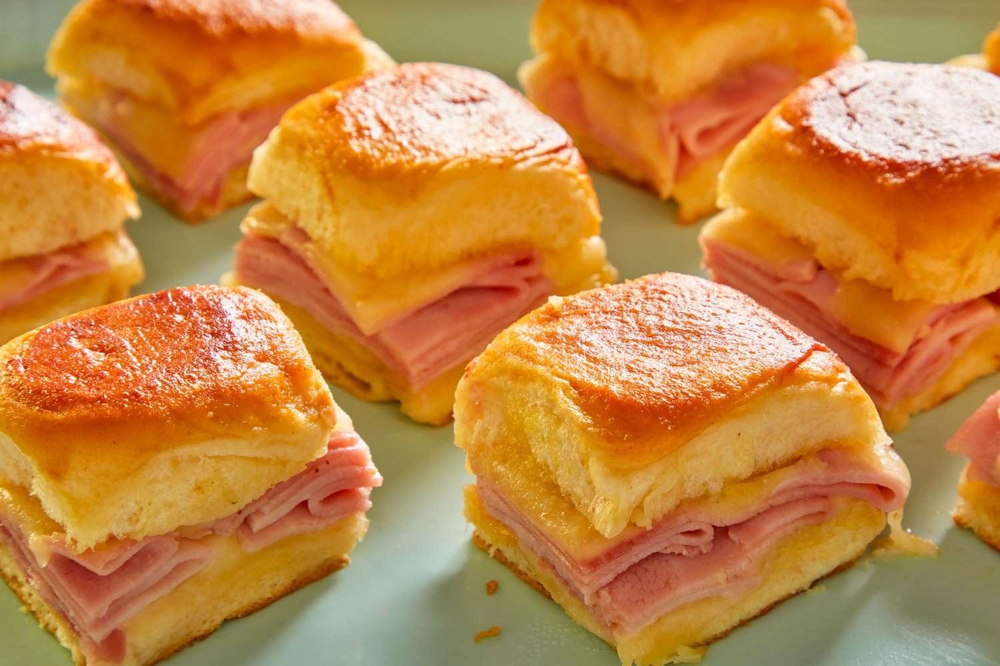

Home
Ham & Swiss Sliders

This is a simple recipe that makes a lot of food with just a little effort.
This recipe is modified version of this recipe.
- Prep Time: ~10 minutes
- Cook Time: ~30 minutes
- Appliances: Oven
- Equipment: Baking dish, brush for butter, microwave-safe bowl
- Time Saver: Preheat oven to 350°F
- Difficulty: Easy
Ingredients
Personal Note: Spices are to taste. These are a starting point.
- love
- 1 stick unsalted butter
- 1 tablespoon Dijon mustard
- 1 teaspoon Worcestershite sauce
- 1/2 teaspoon onion powder
- 1/4 teaspoon kosher salt
- 1 (12-ounce) package Hawaiian sweet rolls
- 12 slices Swiss cheese (about 7 ounces)
- 12 thin slices deli ham (about 10 ounces)
Instructions
- Arrange a rack in the middle of the oven and heat the oven to 350°F.
- Place stick of unsalted butter in a small, microwave-safe bowl and microwave until melted, 20 to 30 seconds. (Alternatively, melt butter in a small saucepan over medium heat.) Add 1 tablespoon Dijon mustard, 1 teaspoon Worcestershire sauce, 1/2 teaspoon onion powder, and 1/4 teaspoon kosher salt, and whisk to combine.
- Without separating the rolls, cut 1 package Hawaiian sweet dinner rolls in half horizontally with a serrated knife. Place the bottom half of the rolls in a 9x13-inch or 7x11-inch baking dish.
- Arrange 6 slices of the Swiss cheese on the rolls, overlapping the slices as needed to completely cover. Fold and arrange 12 thin slices ham over the cheese, arranging a slice on each roll. Layer the remaining 6 slices Swiss cheese over the ham. Place the top half of the rolls over the cheese.
- Brush the butter onto the top of the rolls. Cover the baking dish tightly with aluminum foil.
- Bake until the sandwich is heated through and the cheese melts, about 20 minutes. Uncover and bake until the rolls are lightly browned, 7 to 8 minutes. Transfer the slab to a cutting board, then cut into individual sliders with a serrated knife before serving.